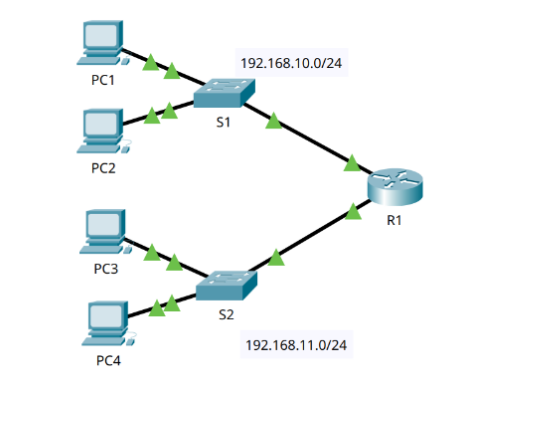
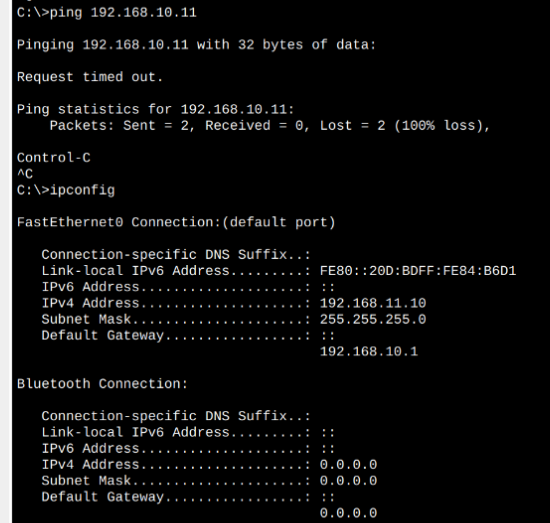
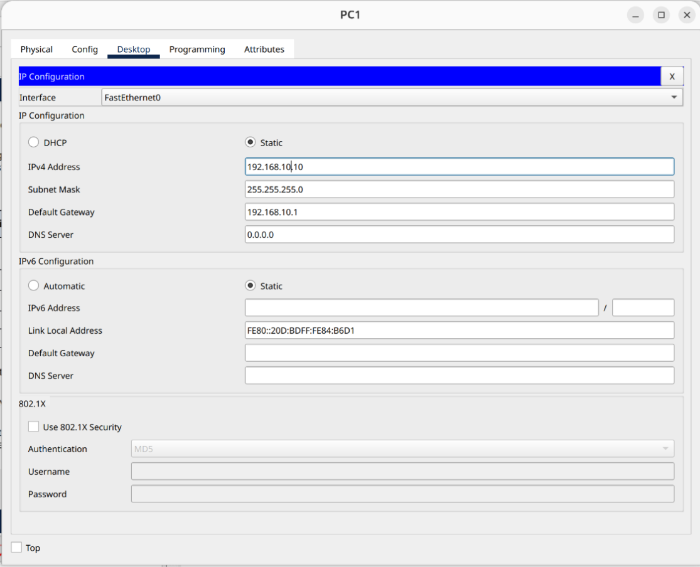
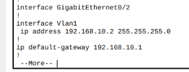
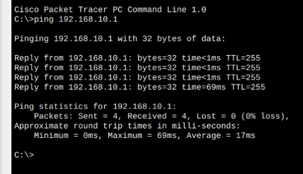
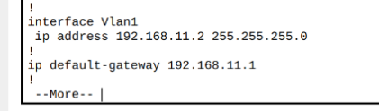
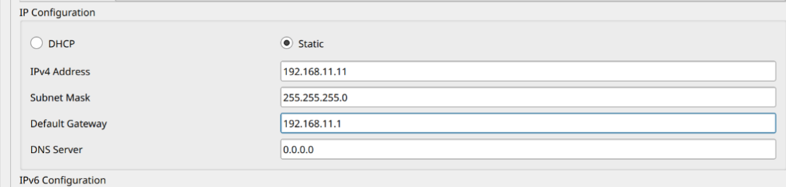
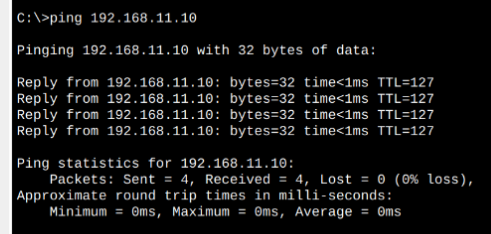
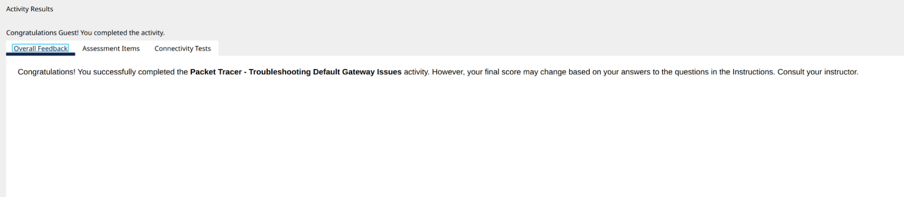

Lab 22 - Packet Tracer - Troubleshoot Default Gateway Issues
By An Le

In lab 22, we will then verify the network documentation by testing end-to-end connectivity and troubleshooting issues.
Part 1: Verify Network Documentation and Isolate Problems
Step 1: Verify the network documentation and isolate any problems.
First, we need to complete the Addressing Table by filling out the missing default gateway.
| Device | Interface | IP Address | Subnet Mask | Default Gateway |
|---|---|---|---|---|
| R1 | G0/0 | 192.168.10.1 | 255.255.255.0 | N/A |
| R1 | G0/1 | 192.168.11.1 | 255.255.255.0 | N/A |
| S1 | VLAN 1 | 192.168.10.2 | 255.255.255.0 | 192.168.10.1 |
| S2 | VLAN 2 | 192.168.11.2 | 255.255.255.0 | 192.168.11.1 |
| PC1 | NIC | 192.168.10.10 | 255.255.255.0 | 192.168.10.1 |
| PC2 | NIC | 192.168.10.11 | 255.255.255.0 | 192.168.10.1 |
| PC3 | NIC | 192.168.11.10 | 255.255.255.0 | 192.168.11.1 |
| PC4 | NIC | 192.168.11.11 | 255.255.255.0 | 192.168.11.1 |
Step 2: Determine an appropriate solution for the problem.
We will then test end-to-end connectivity to make sure that the network is fully connected. By going through each device and check for each devices' configuration, we can identify problems and possible solution to resolve.

Part 2: Implement, Verify, and Document Solutions
We will go through each device, and test.
| Test | Successful? | Issues | Solution | Verified |
|---|---|---|---|---|
| PC1 to PC2 | No | IP address on PC1 | Change PC1 IP Address | Checked |

| Test | Successful? | Issues | Solution | Verified |
|---|---|---|---|---|
| PC1 to S1 | No | No default gateway | Add default gateway to S1 | Checked |

| Test | Successful? | Issues | Solution | Verified |
|---|---|---|---|---|
| PC1 to R1 | Yes | Checked |

| Test | Successful? | Issues | Solution | Verified |
|---|---|---|---|---|
| PC1 to S2 | No | No ip address | Add IP to S2 | Checked |

| Test | Successful? | Issues | Solution | Verified |
|---|---|---|---|---|
| PC1 to PC4 | No | Wrong default gateway | Change default gateway to S1 | Checked |

After all these step, PC1 should be able to ping all other devices in the network.

